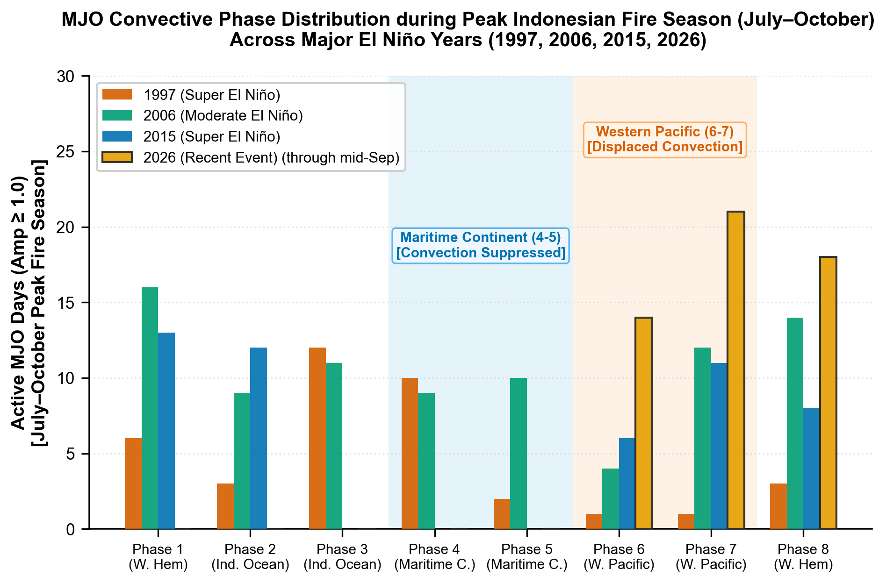

项目主页 ychenzgithub
汇集野火遥感监测、气候指数分析、微距古地图交互赏析、GeoGuessr 知识宝典及实用算法工具，全部代码与资源均托管于 GitHub 开源生态。
精选在线交互应用
基于现代 Web 技术构建的在线平台，涵盖古地图微距赏析、GeoGuessr 速查、区域美食导览与密码学交互训练。

Codebusters 密码学训练中心
面向 Science Olympiad Codebusters (Division B 2026–27) 训练平台，涵盖全 13 种密码教程、无限习题生成器、限时竞速与模拟考。
野火遥感与气候科学计算
结合卫星遥感、气候动力学与空间算法，提供公开开源的地球科学计算工具与数据处理管线。
GFED5NRT · 全球近实时火灾排放
基于 VIIRS 375m 高分辨率卫星主动火点观测，结合 GFED5 区域与植被类型衍生有效过火面积 (EFA) 和燃料消耗 (FC) 标量，在 0.25° 网格上自动化生成近实时全球过火面积与化学物种排放。
- 每日自动化拉取 Suomi-NPP / NOAA-20 卫星火点
- 严格的多物种化学排放因子 (EF) 矩阵转换
- 支持端到端云端同步与全球时空制图

FireSpreadIndices · 蔓延模拟评估库
专业评估野火蔓延数值模拟与观测边界空间吻合度的 Python 基准库。涵盖整体吻合度 (IoU, Dice, SDI, ADI, SSIM) 及过预测/欠预测分解指标。
- 矢量多边形与栅格二值/连续网格双通道计算
- 完整的火灾蔓延形状偏差与面积偏差空间度量
- 包含可重现的 Jupyter 测试工作流与可视化

ENSOMJOupdate · 重大厄尔尼诺分析
聚焦 2026 发展中厄尔尼诺事件与历史极端基准年 (1997, 2006, 2015) 的跨年度气候异常对比，分析次季节 MJO 对流相位对赤道太平洋及印尼泥炭地火灾易发期的深远影响。
- 自动化获取 NOAA ONI 与 BoM Wheeler-Hendon RMM
- 出版级专业气候可视化图表生成
- 深入的物理气候学诊断与火险预测机制
全部公开项目库 (15)
支持按分类筛选、关键词即时搜索与多维度排序，探索全部科研与开源工具。
关于项目库与技术方向
本站收录了由 ychenzgithub 维护的全部公开开源仓库，涵盖卫星遥感计算、气候指数分析、高分辨率数字地图交互、实用科普与算法探索。
所有在线应用均部署于 GitHub Pages 或云端平台，代码与数据完全公开透明，欢迎自由探索与交流学习。
全球火灾排放与遥感
近实时全球过火面积、火灾排放估算管线及蔓延模拟空间度量基准算法。
气候指数与动力学分析
次季节至年际气候指数（ENSO ONI、MJO RMM）自动化数据获取与可视化分析。
交互式地图与工具
高分辨率微距古地图探索、GeoGuessr 速查宝典、美食地图及密码学训练平台。